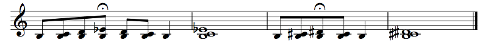

Believe it or not, that whole thing was a digression. What this chapter is really about is ear training.
Has it really been that long since this chapter's introduction? Just go back and read it again, OK? What we're going to do here is learn to appreciate and identify the sounds, plural, of each interval. The intervals come in several variations. Some are consonant; some are dissonant. Some are pure; some are dirty. We'll hear the intervals both melodically and harmonically, in context and out of context. We'll listen for their meaning and their stability and their instability. And while we do that, we'll learn about their mathematical properties too, which is mostly why we bothered with the previous section in the first place.
We begin with the humblest and simplest of intervals: the perfect unison. It measures 0 semitones, 0 cents. Its frequency ratio is 1. It looks like this:
Example 5.5
That's the sound of a perfect unison, first as a harmonic interval, then as a melodic interval, starting at a bunch of places in the C major scale.
With multiple instruments, it's trivial, but on piano you just don't play it as a chord. It actually shows up pretty often when multiple lines come together. You just hit the one note.
The perfect unison needs no resolutions. It's a stable interval and it's a perfect consonance. Trivially. However, the perfect unison can strengthen notes, so be careful about using it too much on more delicate chord members.
It's easy to hear a perfect unison: you hear one note, then you hear the same note. The first two notes of Happy Birthday form a perfect unison:

Example 5.6
No. But what happens if your perfect unison is... less than perfect? It sounds funny, but it's a real problem. (Funny musical instrument joke involving violence against woodwind players: How do you make two oboes play in unison? Shoot one of them. How do you make two piccolos play in unison? Shoot both of them.) Whenever many people are making music together, you may run into two notes that should be the same but aren't. Even on a guitar, you might have two strings that should be making the same pitch but aren't. In a large ensemble, entire sections need to play the same note together. In fact, outside of digital synthesis, you will never get two instruments (or singers) to play exactly the same note. We say that they are out of tune with each other when that happens. If they are playing the same note, they are in tune with each other. While this is almost never the case exactly, any skilled ensemble will be able to get close enough to sound good.
Sorry, sorry! Actually, some cultures value the slight out of tune sound because it provides a shimmering effect, like for example in Balinese gamelan music (you can hear the shimmer right at the first long-ish note at the very start). Some instruments like the glockenspiel are deliberately tuned a tiny bit sharp to get a kind of brightness that is considered desirable. But for an ensemble to sound together, for the sound to click, unisons need to be as close to unisons as possible.
Let's hear a perfect unison and some out-of-tune sounds (all against a Middle C):
(open all intervals in new tab)
There are two main things I want you to do here. The first one, which I'll call deep listening, is to simply listen to a perfect unison for a while. Like, a long while. Think about that sound. What is the sound like? Is there a bite? A smoothness? Really focus and meditate on that sound. Feel it evolve. The other thing is to play the perfect unison slightly out of tune in either direction and listen to the beats. How do the beats change as you go farther out of tune? How far out of tune is acceptable for this sound?
When you're done, pull up the Offtonic Keyboard, hold a comfortable note in your range (I'm partial to A3 myself), and sing a perfect unison with it. Practice creating that effect yourself.
The beats come from two waves that are very close to each other, but not quite the same. What you hear is the two sound waves coming in and out of alignment. When the sound is louder, the two waves go up and down roughly together; when softer, one goes up while the other goes down. The perfect unison you hear here, unfortunately, is not completely perfect (thanks to the mathematics of pixels), so you'll still hear beats. You will hopefully have noticed that the beats get slower the closer the two waves are in frequency. When the two waves are very close, the beats are very long, and the sound even goes away for a bit at one point (that's how noise canceling works)! That's how close they are. The more interesting evolution you hear is a different story, and it comes from the waves not being pure sine waves but something else, and it will require more math than I have space for right now to explain (but we'll get there eventually, just not in this chapter). The short version is that a generic sound wave can be broken up into many sine waves at related frequencies (all integer multiples. called overtones, of the base frequency called the fundamental), and when the two sound waves are so close in frequency and have the same shape, you hear different overtones beating at different times. It's really cool, I think, but in the real world you will never have sounds that perfect.
However, you should notice that a unison at 10 cents or so sounds like two sounds at odds with each other, while a unison at about 1 or 2 cents sounds like a single, more powerful note. In an ensemble setting, you always want to strive for the latter sound. A truly perfect unison is impossible, but you want it to be close enough so that your sound and the sounds of those around you merge together to create one sound. There's a bit of a paradox here when it comes to blending: if you can hear yourself, you're too loud; if other people can't hear you, you're too soft. In an ensemble, you always need to be listening actively and intently to your section to make your sound get lost inside it, but it still needs to be loud enough for other people's sounds to get lost inside yours. Does that make sense?
They're not that important right now; they're mostly a curiosity. They are called commas, small intervals that arise in Just Intonation between different versions of the same note. Just Intonation (JI) refers to using intervals with whole number ratios (like 5/4) instead of equal temperament, which uses irrational numbers. We'll hear the difference shortly. The Pythagorean comma comes from a trip around the Circle of Fifths: if each perfect fifth is an interval of 3/2 (about 702 cents) instead of exactly 700 cents, if you go up 12 fifths from C, you'll get to C plus about 23.46 cents. That difference is called the Pythagorean comma. If you go up four fifths at 3/2 each from C, you'll get to E, a major third up. If you compare this to the 5/4 major third, you'll find that it's about 21.5 cents higher. This difference is called the syntonic comma. And if you go up three major thirds at 5/4 each, you'll get back to C but about 41 cents flat. That rather large difference is called a diesis. You can learn about other commas as well.
One last very interesting thing that's done with the perfect unison: hocket. This is when the same note is repeated in different voices. Wikipedia has an example from a 13th century piece called Hoquetus. Listen to how the two upper voices alternate on the same note, playing perfect unisons from each other. A similar thing happens at the end of Pete Schickele's Monochrome III for Nine Clarinets, where two clarinets alternate the same two notes (D and E, in sounding pitch), with one playing D E D E and the other playing E D E D. Another example is a Japanese round called Hotaru Koi, about a firefly and something about water here and there. There are three groups singing the same music, but they start a beat off from each other. The music begins "ho (rest) ho (rest)", so the second group, who comes in a beat late, actually sings "(rest) ho (rest) ho", creating a hocket effect. String instruments can do an effect sometimes called bariolage, where the same note is played on multiple different strings. On guitar, for example, the 9th fret on the third string, the 5th fret on the second string, and the open first string all play an E4, but each has a different timbre; Villa-Lobos's Étude Nº11 features this (as well as various chords with two strings playing the same note).
I'm not going to bother with exercises for hearing the perfect unison in different contexts. The perfect unison is trivial. It's stuff a little off from the perfect unison that's interesting! So let's move on to the next simplest interval we have.
Here are many examples of P8's, with a low C as a drone, meaning a constant note. For each of the 12 notes of the chromatic scale, we have an octave ascending, an octave descending, and the two notes played together.
Example 5.7
For the octave it's not a huge deal, but intervals can happen at any place in the scale, and the weird part is that the octave will sound different every time. Whenever you hear a piece of music, you hear many pitches at the same time. One of those is the tonic of the scale. Oftentimes, ear training attempts will include intervals out of context: here are two notes; can you identify the interval between them? The problem is that you contextualize those two notes differently depending on the key. For example, if you're in C major and you hear E and G, you'll think, hey, that sounds major! It must be a major third! But it isn't. It's a minor third. Your ears are tricked, because C E G form a C major triad (next chapter), and when you hear an E and a G in C major, you hear the C as well since it's the tonic of the key. If you heard C and E instead, which is a major third, you would also be hearing an incomplete C major triad, but C to E is a major third while E to G is a minor third.
The perfect octave needs no resolutions. It's a stable interval and it's a perfect consonance. The perfect octave can also strengthen notes, possibly leading to unbalanced chords.
A fantastic example of a melodic P8 is Somewhere Over the Rainbow, from The Wizard of Oz. If you want to remember this interval, just hum the beginning of that song (sing it yourself first before playing the recording):
Example 5.8
I took the liberty of doing some basic melodic analysis for you. The opening interval is, of course, a perfect octave, and that's what you should have in mind when you see one on the page that you're trying to reproduce. But there are two recurring motifs in this short melody, which I labeled A and B. Motif A is two half notes wide apart followed by a step down. In measure 1, we have 1 1 7, going up an octave then down a step. In measure 3, we have 1 6 5, where the wide interval is an M6. At measure 5, we have 6 4 3, where the wide interval is an m6. These wide intervals get narrower with each iteration, while the overall contour of the melody also goes down. I marked the scale with upbow symbols (the V's). These notes also happen at predictable points: the high note of the A motif and the note after, which overlaps with the start of the B motif. There's also a third motif that is too trivial to really be a motif, so I didn't label it: the whole note at the end of each phrase. Phrase 1 is like a question, ending on the dominant. Phrase 2 is like an answer, ending on the tonic. We call a phrase that sounds like a question or a setup an antecedent, and its reply is the consequent. Given these three motifs, all of which repeat, we can see that this little melody is extremely tight, with every little bit of it playing multiple roles and not a single wasted note. The less recognizable bridge of the song is nowhere near this tight (and also has some very tricky intervals), which is why everyone knows this part better!
Now let's talk about tuning. Your task here is the same as before: listen to the sound of the octave for a good long while — like, minutes, not just seconds — and get intimately familiar with its sound. Then go off to the sides and listen to what it sounds like when it's a bit flat or sharp.
(open all intervals in new tab)
Good. I hope you also noticed that a slightly flat octave is less offensive to the ear than a slightly sharp one. We usually tend to underestimate wide intervals, and that's probably for the best. It's usually easier to go a little flat. The interesting thing is that there's not that much difference between a slightly flat octave (like, less than 10 cents) and an in-tune octave, but there's a world of difference between a slightly sharp octave and an in-tune one. I'm not sure why that is, but sharp intervals in general tend to be more grating to the ear than flat ones.
There are a couple of other interesting intervals here. The pure augmented seventh is what you get when you stack three pure thirds (5/4). The octave – syntonic is a syntonic comma below the octave, and it can come up in Just Intonation, which is why Just Intonation is not all that great! The Pythagorean augmented seventh is what you get when you go around the entire Circle of Fifths: it's an octave plus a Pythagorean comma.
Octaves are fun, and multiple octaves are even funner. Mikhail Ippolitov-Ivanov's Procession of the Sardar, from Caucasian Sketches, begins with a nice melody done by the bassoon and piccolo, several octaves apart. Issac Albéniz's Leyenda has a nice Spanish melody starting at about 1:39 with the notes two octaves apart. This piece opens with a lot of perfect unisons, too, in an interesting pattern. (I'm not sure I like the performance...) A common technique is rapidly alternating octaves, like in the first movement of Beethoven's Pathétique (Piano Sonata No. 8). This one even has the score! The alternating octaves begin on the second page (about 1:40) and last for basically the entire first movement (note the tremolo notation). Just be careful: the second movement was what caused me to want to practice piano for real. You should avoid it unless you want to fall in love. Assuming you're listening, pay attention to Beethoven's architecture with this piece. If you're wondering why Beethoven is so revered, it's because of how he organizes his music. See if you can identify musical motifs, little rhythmic and/or melodic ideas that keep repeating. Notice how they repeat in different keys, with different chords, in different directions. He's a master of melodic development, and this is one of the finest examples of a piano sonata in existence (and it's a total bitch to play, holy shit, at least the first movement). Anyway, I know I just got you to play three classical pieces, but this octave stuff is very easily applied to other genres. Rapidly shifting octaves, even more than just two — quickly alternate A1 A2 A1 A0 A2 A1 A2 A0 or something in the bass — will add texture and complexity to even EDM, and melodies doubled in octaves are a nice trick for any occasion.
Oh, those are fingerings! It's to help pianists out when reading; if someone's already planned out which finger they should use for which notes (thumb is 1, index is 2, etc.), it makes it easier for them. Of course, the pianist is free to disregard the fingerings given, but someone thought they'd be a good idea!
I don't think there's anything else interesting to say about the humble octave, so let's move on to the next simplest interval:
This is the first nontrivial interval in the bunch. Like, it's actually between different notes. Cool, huh? So I'm giving it to you here both ascending and descending, on all twelve notes of the chromatic scale relative to a C drone. You get a different feeling from each one, and it's good to be able to unite them all as the same interval.
Example 5.9
The perfect fifth is an open consonance, meaning that it's a kind of bare sound. The perfect fifth is very stable — in fact, it makes other notes stable just by being there! Despite the drone, on every measure you can kind of feel the tonal center shifting. The only tension in the perfect fifth comes from other notes, so for example, in the Db - Ab fifth, both notes have a tendency to resolve down to C, the tonic (as given by the drone). Similarly, in the next fifth between the F and the C, the F wants to resolve down to E because the interval the F makes with the drone, the perfect fourth, is unstable.
It does. It's a P11. The double bass plays an octave lower than written, like the guitar.
Probably? But for some reason it's just not done that way. Oh well.
The song most people use to remember how the perfect fifth goes is Twinkle Twinkle Little Star:

Example 5.10
Since the fifth of the scale is the dominant, the most important note after the tonic, bass instruments very often alternate between the 1 and the 5, making either a perfect fifth or a perfect fourth depending on which one is higher. Timpani before the 20th century would almost always be tuned to the 1 and the 5; in keys like C major they'd be G and C (think of the timpani in the introduction to Richard Strauss's Also Sprach Zarathustra), but in G major they'd be G and D, a perfect fifth. Bass singers are often cursed with having to sing nothing but 1's and 5's all day too.
Let's listen deeply to the fifth. This time, listen also to the 3/2 pure fifth (by which I mean spend minutes taking in the sound):
(open all intervals in new tab)
I thought you were, but maybe not. I couldn't hear a difference either. The perfect fifth is the simplest interval where the 12-TET interval isn't a simple whole number ratio: a perfect fifth is 7 semitones, or 27/12, which is very close to but not quite 3/2. You can try to hear the difference, but they're less than 2 cents apart. The 3/2 perfect fifth is very open and clean, and the 12-TET perfect fifth is almost so.
A few other intervals of note are here as well: you know how the Circle of Fifths works, right? You go up a fifth 12 times and you wind up back where you started? Well, if your fifths are 3/2, you actually end up one Pythagorean comma too high, so to correct that, the Pythagorean tuning has 11 fifths that are 3/2 and one that's a bit smaller called a wolf fifth. That's the Pythagorean Wolf Fifth shown above. With the 12-TET perfect fifth, exactly 12 fifths wind you back to where you started, but 3/2 fifths don't work that way. Well, if you make the fifth a bit wider or narrower, you can fit a different number of notes in the Circle of Fifths. We'll explore these tunings much later (much, much later), but to give you a taste, one really nice one comes from splitting the octave into 19 equal steps instead of 12, and another one that's not quite so nice can be found from splitting the octave into 17 steps. The 19-TET (19-tone equal temperament) tuning has a fifth that's noticeably out of tune compared to the 3/2 pure fifth, but its thirds sound much nicer. The 17-TET tuning has a fifth that's also noticeably out of tune, and its thirds are even worse! See if you can figure out at what point you start to hear beating.
How do you think they work? I'll let you answer that yourself for now, but one thing you may want to try to do is simply draw, on paper, a circle of fifths with 19 notes instead of 12. The fact that B = Cb, F# = Gb, and C# = Db are special features of 12-TET; 19-TET has a different set of enharmonics. See if you can figure out what those are. At some point there'll be a 19-tone keyboard for you to play with.
Now, the fifth, the fifth... The fifth is a special interval. It's consonant and stable (and stabilizing), but without other notes it sounds bare, as we'll discuss in the next chapter. Because of that bareness, it has a fairly harsh sound. An open fifth — that is, a fifth without anything else inside — is not an interval that happens particularly often. One of my first compositions (which actually won an award), Tower, is based on open fifths (listen to the first movement, and excuse the bad brass synthesis). Open fifths can also connote strength, like in the first of Malcolm Arnold's Four Scottish Dances; listen for them in the brass, as well as the opening interval. The second movement begins with a descending perfect fifth, which has a totally different connotation. The perfect fifth is also known in pop music as a power chord, and it's especially useful for guitar sounds with a lot of distortion, because its bare nature makes it sound much cleaner than a chord with more notes. The low registers on the piano have similar properties; compare:
Example 5.11
The first chord is very muddy; the second chord is much nicer. It gets fuller when you add more notes, but look at the notes. The third chord has a fifth and an octave, which sounds fuller (this is common in power chords as well). The fourth chord also adds the third of the chord, the B. The first chord and the fourth chord have the same notes, just in different octaves, and notice how that perfect fifth between the bottom voices changes things. Low, complex sounds like an overdriven guitar or even a piano just don't play well with small intervals. There are acoustic reasons for this. The (almost) 3/2 ratio of the perfect fifth reduces the nastiness.
The perfect fifth has an enharmonic cousin that shows up very rarely: the doubly augmented fourth. We'll see it in the next chapter as part of an respelling of an odd chord, but it can happen between, for example, a b6 and a #2. The b6 wants to resolve down and the #2 wants to resolve up, so this goes to 5 - 3, a major sixth.
Here comes the next most important interval in Western music:
The major third also comes in another flavor, the enharmonically equivalent diminished fourth. Here's how it sounds on each scale degree against a drone:
Example 5.12
Disorienting, isn't it?
I could have done it either way, but they do actually sound really different in context. Here's a comparison for you:
Example 5.13
It can be! But the major third generally is very bright. The major third is what gives music the feeling of sounding major. The major chord is called major because it has this major third with the root, and the major scale is called major because it has the major chord on the tonic, so this major third is extremely important. It's also very stable, though it can sometimes tend towards the fourth. On the other hand, diminished intervals almost always want to collapse inwards and augmented intervals almost always want to expand outwards, and the diminished fourth is no exception! The major third is very stable, but the diminished fourth is extremely unstable with a tendency to collapse inwards as in the above example. The major third is also a consonance, but it's not an open consonance. It wasn't always considered one, which is why you hear less of this interval if you listen to early music, like, pre-Renaissance. The diminished fourth, of course, is dissonant, but it's a kind of strange case because it really does sound like a major third, a consonant interval, and that's why the diminished fourth is one of my all-time favorite intervals. I never leave home without it!
The major third has a bit of a tendency for stabilizing the lower note of the interval, though less so than the perfect fifth (but more so than the minor third). You can put major thirds in your chords for some bite and complexity. When listening to the major third, be aware that it can be found in minor-sounding music. For example, C Eb G is a minor chord, but Eb G form a major third. (A similar situation happens in reverse; C E G is a major chord, but E G form a minor third.)
To hear the major third, many people recommend just thinking about the major arpeggio or just singing the major scale (1 2 3...). One song you can think about is Johann Strauss, Jr.'s Blue Danube (An der schönen blauen Donau, the theme starts like a minute and a half in) (score):
Example 5.14
I did some very basic analysis of the form here. First, the M3 at the start is in a box. That's not part of the analysis. The thing I want to show you is that the analysis can be multi-level. We have these two-measure motifs, the Q (for Question) and A (for Answer) motifs. The Q motif is rising and feels like it's asking a question; the A motif is falling and always starts on the same note that the question ended on but up an octave (if you listen to the orchestral recording it makes more sense), and it feels like it's answering that question. But on a wider level, we have four-measure phrases, where the first phrase is a statement and the second phrase is a question, followed by a third phrase that's a question and a fourth that's a statement. And these, too, are part of eight-measure periods (which I didn't mark), where the first eight bars are a question and the second eight bars are the answer. The third period (two phrases generally make a period) is a bit special, because the main theme has already been stated and answered, but now we're building, with higher notes, towards that high F# in the fourth period which will take us to the ending. The fourth period begins with a Q motif, but the rest of it is fairly different material. The thing that stays the same is the quarter-quarter-half rhythm that happens three times. That rhythm can be said to be a fragment of Q. When small bits of motifs are scavenged like this to create new material, we call it development.
Viennese waltzes do that. I think I prefer them straight, but it's basically like swing except the women wear big frilly dresses. The second beat in the 3/4 of the waltz comes a little early. How early is up to the conductor, and it won't happen every single bar. It might have something to do with the dance steps that these waltzes were originally meant to accompany. Much like swing later on in America, waltz dancing was the big hit in Vienna before WWI killed it. This is what the rich were doing in the 1890's while not giving a shit about poor people. It was fun times (if you were rich, anyway).
Time for the deep listen. But this time, start with the pure major third at 5/4, and only after you've absorbed the sound of that interval should you move on to the equal-tempered 400 cents.
(open all intervals in new tab)
It's always been out of tune. Listen to 5.12 again.
Yep! This is why 12-TET took so long to catch on. The thirds sound like shit! If you make the thirds smaller, they'll sound better, but you can't make all the thirds smaller at the same time, because if you do it to three of them, the fourth one will be the wolf d4 at 32/25, and that sounds truly terrible. But the benefits of having all the major thirds have the same size was found to outweigh the shittiness of the 400-cent sound.
Let's look at some other landmarks. The 17-TET A2 and M3 are in this range; 17-TET is a weird scale because it goes C Db C# D Eb D# E F, etc. 19-TET goes C C# Db D D# Eb E E#/Fb F, etc. Notice that 19-TET has a note between the E and the F, while 17-TET doesn't. 19-TET is a nice tuning because the 19-TET M3 is so close to the pure 5/4, closer than the 12-TET M3! 17-TET's M3 sounds awful. But the 17-TET A2 is actually really close to a neutral third (the 350-cent note), which is its own special sound (that we won't be going into here, sorry). In the other direction, we have the 14/11 undecimal major third and the 9/7 septimal major third. These are intervals between notes on the overtone scale (which we'll talk about eventually), and they have a somewhat pure sound due to their small whole number ratios, but they're not even close to available in 12-TET. People don't often get a chance to hear them, but you can!
While perfect fifths are open, thirds are the exact opposite. A fifth needs a third for a full sound; a third needs nothing. Therefore, it's very common for a melody to be doubled in thirds (both major and minor), or occasionally sixths, which are just inverted thirds:
Example 5.15
This is Chopsticks, which was originally intended to be played with the hands in vertical position, doing a chopping motion. The original version is actually fairly different from this popular version (don't mind the racist cover...). Most of the melody is in diatonic thirds, both major and minor (which I labeled M and m, respectively). In the second half (actually the first part in the original), the intervals get more varied, but not really that much. The M2 is dissonant and consists of the 4 and the 5, so the 5 (which is stable) stays and the 4 (which is unstable) resolves to the 3. The M6 is just an inverted third. The P8 is the only one that's really out of place. Every chord here has two notes, generally in thirds, but the P8 has only one note. For consistency, that bottom note should be an E, not a C, but see Rule 0. The P4 in the next measure is just a passing sonority; it also sounds a little off but it's only for an eighth note; the composer/arrangers clearly thought that the scales in both voices were more important than this one interval.
Thirds sound muddy in very low registers (which is why the fifth is generally preferable), and due to equal temperament being... temperamental when it comes to thirds, they can also sound strident and grating in very high registers. They usually sound sweet or at least neutral in middle registers. Melodic thirds usually suggest chords, and they're very common intervals that don't usually require special consideration.
We're talking about the third somewhat generally. That's because major and minor thirds are just about the same, except that the major third is a half step wider. They have mostly the same functions. However, the major third is usually heard as more fundamental than the minor third, in a sense. It tends to sound "happier".
NO. DID I SAY THAT? NO! Major thirds sound a bit happier than minor thirds in direct comparison, but the mood of the music is determined by a great many things, including tempo, instrumentation, register, rhythms, lyrics, and so on. And while major thirds feel a bit happier, minor thirds do not feel a bit sadder. Minor thirds are pretty neutral.
Unlike the third, the diminished fourth has a distinct feel. The most common places to find a diminished fourth are between the 7 and b3 or between the #4 and b7, though there are of course other possibilities. This interval is not generally used harmonically in tonal music; if it is, it's a dissonance. For example, you could have a 7 b3 resolving to 1 b3, or even going the other way around; this creates a very rootless harmony:

Example 5.16
A fantastic melodic example of the diminished fourth is in the (first) subject of Bach's Well-Tempered Clavier Book I, the Fugue Nº4 in C#m (starts at 3:12). Here's the exposition (with the five voices written out):
Example 5.17
A fugue is a piece for several independent voices where all of the voices have similar material but at different times, kind of imitating each other. In particular, a fugue begins with the subject in one voice, followed by the subject in another voice, and so on until all of the voices have entered with the subject, and from there various things happen. This section, where each of the voices comes in with the subject in turn, is called the exposition, and that's what I've included here; the fugue goes on for much longer (as you can hear at the link). By the way, Bach wrote the Well-Tempered Clavier, from which this fugue is taken, for... the clavier, or keyboard. It was not supposed to be an equal-tempered instrument, but it was a temperament where every key was at least usable, something that hadn't been the case previously. Bach wrote 24 preludes and fugues, one in each major and minor key, and then he did it again for Book II. This is my favorite piece in the collection (second favorite: Fugue 24 in Bm from Book I).
Because I like it better that way. Trust me, Bach wouldn't have minded. It's very much in the spirit of his music; besides, it wasn't written to be played on a piano either. And this is standard brass quintet instrumentation, with two trumpets, horn, trombone, and tuba; if you get a chance, see if you can listen to some of Bach's other fugues played by Canadian Brass or one of the other professional brass quintets.
Let's look at this fugue. It begins with the subject in the bass, featuring a 7 - b3 diminished fourth. It's one of the distinguishing features of the subject. (By the way, the dynamics are all my interpretation; Bach didn't write them in.) Bar 4, tenor comes in with the subject, but note how the bass starts on 1 but the tenor starts on 5. It's standard for fugues for the subject to be in the key of the tonic and the answer to be up a fifth. Sometimes it will be exactly up a fifth, in which case it's called a real answer, and sometimes it will be only kind of up a fifth, in which case it's called a tonal answer. The tenor entrance here is a real answer.
The alto then comes in with the subject again at bar 7, but notice that it doesn't start on the downbeat anymore. That's OK. The three voices continue hanging out for two more bars, until, at bar 12, the mezzo-soprano comes in with a tonal answer. See how it starts on the 5 but isn't an exact transposition? In the tenor answer, the diminished fourth is #4 - b7, but here it's 3 - b6. There's a reason why this kind of thing happens in fugues: the composer doesn't actually want to change keys. With this subject, it's chromatic and short enough that the real answer doesn't change keys, which is how Bach was able to get away with both kinds of answers in the same exposition. Finally, at bar 14, the soprano enters with the subject again, but the tenor drops out. Why? Because in measure 19, the tenor comes back with the subject. But since I'm only showing you the exposition here, the second entrance of the tenor is part of the rest of the fugue. This is a convenient place to stop, too: it's the first cadence! A cadence is a kind of resting point in the music; we'll talk much more about those in later chapters. In this case, the cadence is in E major, the relative major of C# minor. Anyway, the fugue goes on for a while, and it's glorious. Seriously. Learn to play this on the piano if you can, on a real instrument, because yeah. It's a triple fugue, meaning that there are three subjects, but the other two subjects don't come in until later. The video I linked has the score and has the subjects highlighted, so you can see and hear the different streams of the fugue come together as one, full of these deep, dark diminished fourths. On the other hand, I disagree with the pianist's interpretation, and it's WAY too slow. But I'm sure you can find a better recording if you take a look around.
Anyway, that's enough about the major third. Let's narrow down by a half step, shall we?
Like the major third, the minor third also has an enharmonic cousin, the augmented second.
Example 5.18
The minor third is the most neutral of neutral things ever. It doesn't really make the bottom note sound like a tonic, which the major third does a little and which the perfect fifth does a lot. The b3 scale degree can sound dark since it signifies that the mode is minor, like it does in the first measure here, but the interval itself has no such connotation. For example, the eighth bar has the E - G minor third, which sounds quite happy because, over the C drone, E - G makes a C major triad (C E G). The minor third is considered consonant and stable.
The augmented second, on the other hand, is an interesting animal. Usually it appears as a scale step. For example, there's an augmented second in the harmonic minor scale between the b6 and the 7. In this case, the interval is considered a dissonance, and it's actually pretty carefully avoided in Common Practice music. Avoiding the augmented second is the reason why the melodic minor scale exists in the first place. When it does happen, as an augmented interval, the tendency is to widen to a major third or perfect fourth (so it's unstable). For example, b6 7 can widen to 5 7 or to 5 1 (usually with other notes in the chord too):
Example 5.19
I actually just noticed that A2 - M3 is the same, enharmonically, as m3 - d4. Shows how important context is!
In extended tonality — that is, stuff with tonal centers but that doesn't specifically follow the rules of Common Practice — augmented seconds have a lot of great uses. Besides the beautiful b6 - 7 of the harmonic minor scale, it shows up in the b2 - 3 of the phrygian dominant scale and the b3 - #4 of the dorian #4 scale (more about these in a few chapters). Another useful thing to note is that the chromatic scale has 12 semitones, so the major third at 4 semitones and the minor third at 3 semitones both divide it evenly. This means that if you go up 3 major thirds or 4 minor thirds, you end up where you started. We'll talk more about this in the chapter on chords.
To remember what the minor third sounds like, one can think of the first two notes of Greensleeves:
Example 5.20
I thought it would be cute, since "flute" and "lute" are just one letter off. Actually, I wrote this to be easily playable on a regular guitar. I have no idea how to write for actual lute. And I used the harp sound in Sibelius because I thought it fit better. So ignore the whole "lute" thing, I guess.
Notice the minor third right at the start, from the A to the C. That's the point of this. But, to quickly do a bit of analysis on the melody, note how each phrase starts by going up and then goes down to relax. The first phrase (mm. 1-4) is a kind of question, and the second phrase (mm. 5-8) is a kind of answer. They both start the same, but they have different endings. Then, we have the third phrase (mm. 9-12) and fourth phrase (mm. 13-16), which start higher but come down in the same way that the first two phrases do. The rhythm is an interesting constant; measures 1, 2, 3, 5, and 6 all have the same rhythm, but measure 4 only begins it, and measure 7 has the second half of the rhythm twice to build tension towards the ending. I should point out here that, as a folk tune, many variations exist. That F# in measure 1 is not universal, for example. See how it's not in the key signature? Some people play that as a #6 and some people just play that as a 6. The chords, also, are my own interpretation.
Because I don't see a good enough reason not to, here's another English melody, John Stafford Smith's Anacreonic Song, that begins with a descending minor third. I'll show you the American version:
Example 5.21
There are obviously a great many renditions of this tune, what with it being America's national anthem and everything. A particularly great version is an arrangement by Jack Stamp entitled A Love Song to Our Country, written just after the events of 9/11/2001, that is very in line with the original theme of Francis Scott Key's poem: that even in the red glare of the attacks against America, its Star-Spangled Banner yet waves, symbolizing the Republic for which it stands, in defiance against the attackers. Stamp took a familiar melody and reharmonized it and recontextualized it to take on a new meaning, which shows you just how flexible musical elements can be. It also hopefully exemplifies how instrumental music can convey meaning in general. Skilled composers have been injecting their compositions with meaning — by which I mean politics, by the way — from time immemorial. Dmitri Shostakovich, for example, laughed at Stalin in the famous finale to his Symphony Nº5: the theme in the upper strings and woodwinds represents Stalin, and the trumpets represent laughing at him. Shostakovich was not a huge fan of Soviet communism, it turns out.
Anyway, what were we talking about?
Oh. Right. Those. Let's do a deep listen. Start with the 6/5 for a few minutes, meditating on it until the sound evolves in your mind, then move on to the equal-tempered interval, again until the sound evolves in your mind:
(open all intervals in new tab)
That's the way it goes. The pure 6/5 is a wonderfully smooth sound. Note that (6/5)·(5/4) = 3/2. The just minor third is derived by going up a fifth, 3/2, and down a major third, 5/4. The other thing is that it sounds roughly like a car horn. Why? Because car horns are often in minor thirds. I don't know why car horn designers do that; I'm sure they could pick any other interval they want. Maybe they think this one will be best for alerting people. Except that car makers aren't trying to alert other people; they're trying to get people to buy their car. Maybe the minor third makes drivers feel more powerful when they wake up the neighborhood at 7 AM to pick up the kid that carpools with them? I don't know.
Other points of note: the septimal minor third at 7/6 also has a fairly nice crunchy sound, but it's not very close to an equal-tempered interval so you won't generally hear it. The 19-TET minor third is very close to the 6/5 minor third, so that's a nice bonus when using that temperament. The undecimal neutral third at 11/9 is a fairly unique sound worth getting to know a bit. These septimal and undecimal sounds come from the overtone scale, about which we'll speak much more eventually.
What I'm trying to get across here is how much of a compromise the 12-tone equal tempered scale is compared to JI (Just Intonation). Unisons, octaves, fourths, and fifths in 12-TET are the same or very close to their JI counterparts, but JI thirds sound much more pure than 12-TET thirds, of both types, and they're supposed to be consonant! The lack of purity in the dissonant intervals can be ignored since they're dissonant anyway, but when it comes to thirds, the equal-tempered compromise is a disappointing one. For a long time, equal temperament was resisted on this basis, that it was better to sound good in some keys and not others than to sound mediocre in all keys. Eventually, though, people simply got used to the equal-tempered thirds, and this opened up a world of possibilities when it came to enharmonic relationships.
Both melodically and harmonically, the minor third is similar to the major third, so there's not much more to say about it. The augmented second, though, is more interesting. The reason why it tends to expand outward is because almost always, one of the notes in the interval will have a strong tendency. For example, if you have 1 - #2, then the #2 wants to resolve up to 3. b2 - 3, the b2 wants to go to 1. b6 - 7, both notes want to resolve, the b6 down to 6 and the 7 up to 1. b3 - #4, #4 wants to go up to 5. Harmonically, though, the augmented second sounds just like the minor third that it's enharmonic to. The diminished fourth is much darker than the major third thanks to context, but since there is no note "inside" the augmented second, it doesn't have a very interesting sound as a harmonic interval. But melodically, it's a whole other ball game. The problem is that it has a sort of exotic sound, probably because it's associated with "exotic" music (from the Western European perspective, anyway). Musics in Eastern Europe, the Middle East, Andalusia, Judaism, Roma, etc. all feature this lovely interval in a prominent way. I've already shown you a few examples (1.21, 2.6, 4.21), but here's another:
Example 5.22
This is Ben Zion Shenker's Eshet Chayil, sung on Friday nights at the Shabbat table. The words are from Proverbs 31:10-31, but the melody is by an extremely prolific composer that belonged to the Modzitz sect of Chasidim. Many of his tunes became very well-known in the wider Jewish world, and Eshet Chayil is one of his most ubiquitous. Jewish music is often written in this interesting scale called phrygian dominant. We'll talk about it more when we discuss modes, but it goes 1 b2 3 4 5 b6 b7, featuring an augmented second between the b2 and the 3. The scale goes by different names, including freygish in Yiddish, Ahavah Rabbah in Hebrew, and maqam Hijaz in Arabic (those terms all have different connotations, though, so they're not quite interchangeable).
KEY SIGNATURES LIE, didn't I tell you? THEY LIE! But in this case, it's because I consider phrygian dominant to be a minor mode, even though it has a major third with the tonic. To an extent, it's personal choice, but you know how music notation is primarily a way of conveying information in order for someone to actually read and understand it? We know key signatures. We know D major and D minor, and we know that if we see one flat and lots of D's that we're in D minor. I think that telling the reader that we're in D minor is lying less than telling the player that we're in D major, and using a nonstandard key signature would just be confusing. Phrygian dominant is an extremely interesting concept that I consider to be about as fundamental as major and minor, but it's something we'll discuss in depth later.
Let's go to the inversion of the minor third:
The major sixth is enharmonic to the diminished seventh. Here's how they sound in the scale:
Example 5.23
Sixths are weird, because they're consonant, but they don't sound that consonant melodically. To my ears at least, the major sixth actually emphasizes a note that's not part of the interval, the note a fourth above the lower note. You often see the major sixth between scale degrees 5 and 3, the reason being that it just sounds too awkward to use unless you're outlining an obvious chord. You of course also hear this interval from b3 to 1, where the tonic is the 1 and you're outlining a minor chord. It's difficult to hear the major sixth and tell it apart from the minor sixth because of this; you rely on your ears to tell you if it's major or minor, but 5 to 3 sounds major while b3 to 1 sounds minor and they're both major sixths.
Using sixths harmonically is fine and dandy, just like thirds. They work much the same way. Generally, this is the case because the harmony is well-established already, because the sixth on its own is difficult to interpret. Melodically, though, the jump is just too wide to be singable or to sound pleasant without other notes in between; if you do come across an interval of a sixth, it's almost always followed by a move by step in the opposite direction. Downward sixths are especially awkward. These are all much less awkward if the sixth is outlining a chord already present in the harmony at that point, and then, the sixth, major or minor, can be one of the prettiest intervals you'll hear.
Since the sixth isn't a very strong interval (unlike the major third), its enharmonic variant the diminished seventh isn't particularly notable like the diminished fourth. Rather, the diminished seventh shows up in the harmonic minor scale between the 7 and the b6, and like most diminished intervals, it tends to resolve by contraction (it's dissonant, naturally). The 7 and b6 resolve to 1 and 5, respectively.
The tune I've most often seen to represent the major sixth (in the US, at least) is the NBC chimes:
Example 5.24
This has one obvious downside: it sounds major, because it's a 5 - 3 major sixth, and it doesn't give much aural insight into the minor-sounding b3 - 1 major sixth. Unfortunately, I can't actually think of any tunes that begin with a b3 - 1, so... sorry.
Let's just do the deep listening. Again, start by listening to the pure (5/3) major sixth for a while before moving on to the equal-tempered major sixth.
(open all intervals in new tab)
Heh. Eh. I dunno. I think you should play them again, but this time sing the missing note of the chord (so either a fourth up/fifth down from the lower note or a fourth down from the upper note).
A bit! The major sixth is a fairly difficult interval to think about, but what's amazing is that the pure version sounds crisp and clear while the equal-tempered version sounds very out of tune. Even the Pythagorean major sixth sounds better. The difference here is that the pure major sixth is derived by going up a pure fourth (4/3) then up a pure third (5/4), while the Pythagorean major sixth is derived from going up three fifths (3/2). The fact that these two notes are so far apart (the interval is a syntonic comma, about 21.5 cents) is one of the main reasons why we have to make serious compromises in tuning no matter how we go about it. We'll talk about this more when we get to the major second, which is where the problem really lives.
Another interesting little bit here is the septimal major sixth, which is another crisp sound but it's pretty far from 12-TET!
Harmonically, the sixth is the same as the third. If you're harmonizing with someone, you'll probably sing either a third or a sixth above or below. Melodically, the major sixth is very often used as a quite emotional pickup, as seen in Nobuo Uematsu's soundtrack for Final Fantasy VI, Gau's Theme, or in the trio of the Spanish pasodoble Pepita Greus, by Pascual Pérez Chovi. This last piece also heavily features quintuplets in the opening, if you want to listen for how those go. And holy shit that clarinet solo the second time through the trio! And, of course, my favorite song beginning with a major sixth, Tristeza (here mostly a guitar instrumental by Toquinho with help from Vinicius de Moraes), by Haroldo and Niltinho, which I showed you back in Example 1.7:

Example 5.25
We can't quit the major sixth without talking at least a little more about the diminished seventh. Harmonically it's used in diminished seventh chords (we'll talk about them soon) and not much else (well, other than similar chords), but those chords do pop up pretty often. The first movement of Beethoven's Pathétique (Piano Sonata No. 8) uses it melodically right before the alternating octaves we talked about earlier in the section on octaves, in a 7 - b6 situation. Note that while augmented seconds are somewhat avoided in Western music, diminished sevenths are not. The diminished seventh is dissonant, sure, but it's one that's commonly used and resolved.
Now we switch flavors:
The minor sixth also has an enharmonic associate, the augmented fifth:
Example 5.26
Minor sixths are similar to major sixths in that they're kind of neutral and can be either major or minor depending on the circumstance. 5 - b3 outlines a minor chord and tonicizes the 1 between them; 3 - 1 outlines a major chord and tonicizes the upper note. If you just listen for whether the interval sounds major or minor, your ears will deceive you, so be sure to think about it carefully when identifying this interval. The minor sixth is consonant and needs no resolution.
On the other hand, augmented fifths are dissonant as fuck. Unlike the other augmented and diminished intervals we've come across so far, the augmented fifth does not have much of a tendency to resolve anywhere, but it's not actually stable either. It's the inversion of the diminished fourth, so you could resolve it outwards like augmented intervals usually do, but it's not very satisfying. In context, though, it makes sense:
Example 5.27
(The bass clarinet is usually written in treble clef and reads an octave down, but I just did it in bass clef here to be simpler.) Both of the resolutions in Example 5.27 begin and end with the same chords, but the resolution of the A5 is different. In the first, the Eb B resolves to Eb C, which is just not really very satisfying. The chord is C minor with a B; the B is the dissonant note, so that's the note that has to resolve. The second resolution is a bit nicer. By changing the root of the chord, the chord becomes a G major chord with an Eb, so now the Eb is the dissonant note; that resolves down to D before the new chord resolves to C minor. Again, we're going to talk about chords soon, though cadences like these will have to wait just a bit longer.
To hear the minor sixth, there are a few options, but none is particularly universal like for the other intervals we've seen so far, so I'm just going with one that I like: Luiz Bonfá's Manhã de Carnaval:

Example 5.28
I didn't write an analysis on the music directly this time, but that doesn't stop us from thinking about it, right? From the beginning to bar 16, we have one complete phrase. It's a fairly long one, but that's the first time the melody actually reaches a cadence. It's broken up into four-measure segments. The first four bars and the second four bars are nearly identical, but the harmony is different; measure 2 has a C# while measure 6 has a C natural. (This is jazz, so the rhythms are fungible; we don't need to worry about those being exact since the performer will improvise them anyway.) Then, we get these two-bar motifs going down, first in 8-9, then a step lower in 10-11, and finally another step lower in 12-13, with 14-15 being a similar pattern that doesn't go all the way down like the others and instead sets up the repetition. 17-20 are exactly the same as 1-4 (I wrote the rhythm differently, but that's not important). On the other hand, 21-24 repeats that phrase a step lower instead of at a similar pitch level. 25-26 and 27-28 are the attempt to resolve that with a similar motif to what we had earlier in 8-9 but with different intervals, and 29-31 resolves the melody with a mostly different motif altogether. Then there's a coda that's basically a separate thing; it almost feels like it doesn't belong.
Anyway, this piece starts with a minor sixth. Another piece that starts with a minor sixth that feels completely different is the first melody from Scott Joplin's The Entertainer:
Example 5.29
The minor sixth in question is the one in the right hand at measure 5. I figured it was worth including this because Manhã de Carnaval begins with a 5 - b3 minor sixth, while this has a 3 - 1. It's a completely different feel due to the context.
Many pieces of music, especially in dance forms (waltzes, minuets, marches, rags, etc.), are actually made up of several different melodies that don't necessarily have elements in common, kind of like movements of a suite. Usually each strain repeats once, and there's often a trio, a strain in a different key, which may end the piece or warp back to the beginning. The Entertainer has the form IAABB'ATTB*CC, which is fairly complex but it's not too difficult to parse. The Entertainer is in C major. We first have an Intro. Then we have the first strain, A, which repeats. This is where Example 5.29 ends. We then have the second strain, B, which repeats in a variation (the melody repeats an octave higher). It's fairly common for a repetition to do something different for variety. Then, the first strain A repeats again, just once. We go into a short trio T in F major, which repeats, but atypically, we get a whole new third strain C after the trio, back in C major (after a reprise of the last four bars of B). It's almost as if Joplin wasn't sure how he wanted to proceed from B, wrote two possibilities, and just said, hey, why not both? Anyway, if you know The Entertainer from popular culture somehow, you probably know the first and second strains but not the rest. For some reason these are the most popular bits of the piece. That said, Joplin's Maple Leaf Rag has a similar but more pared-down form: AABBATTCC. There's no intro before the first strain or B* before the third, but otherwise it's the same. The key here is Ab, and the trio, true to form, is a fourth up, in Db.
Let's do some deep listening. Again, start with the pure minor sixth (the 8/5) and then go to the equal-tempered minor sixth. How does that make you feel?
(open all intervals in new tab)
Yeah... Did you internalize the sound? With all of these intervals, it's also useful to play a note on the keyboard and hum the interval above or below it (well, do both) in order to really understand the sound. Also, if you have an actual piano, especially one with actual strings and actual hammers and whatnot, you should be playing these on the piano too, and just letting the sound die away while allowing your imagination to leap between the notes. This is an activity best done while sleepy, in my opinion. An awake person's mind just doesn't wander enough, I'd say. If you can do it, find a piano, sit at it late at night, and just play intervals and listen to them. Consonant intervals like the minor sixth get boring quickly, but I never tire of the major second.
Other points of note here: the pure minor sixth, you'll notice, is sharper than the 12-TET interval. There are other interesting things in the other direction. First, there's the Pythagorean minor sixth, which is simply four 4/3 fourths (from C, you go F, Bb, Eb, Ab). On the other hand, eight 3/2 fifths gets you the Pythagorean augmented fifth, which is much closer to the 8/5 pure minor sixth, ironically: the Pythagorean minor sixth sounds worse than the wolf sixth it would need to support on occasion! There's also the pure augmented fifth, which is the same as two pure 5/4 major thirds, and a septimal and an undecimal interval. I find that there are actually two centers of "purity" and consonance in this part of the interval spectrum, the 8/5 minor sixth and the 25/16 augmented fifth. The equal-tempered minor sixth is near neither of these centers. Sucks. (But notice how the 19-TET scale does have notes fairly close to both...)
Minor sixths work just like major sixths in pretty much every way: they're awkward melodically (except in dramatic pickups or arpeggios) and consonant (and not particularly noteworthy) harmonically. A melody harmonized at the sixth will generally have both major and minor sixths as the key requires. As for the augmented fifth, I find that there's no better way to escape tonality than to use this interval, either melodically or harmonically. It just feels lost.
We have one last consonant interval... kinda:
While the perfect fourth is enharmonic to the augmented third, in practice it just doesn't come up. I'm sure you could contrive a reasonable setup for it (how about this: C Db E F# G, but skip the E; you have an augmented third between the Db and F#), but you can analyze that situation yourself.
Example 5.30
That's because the fourth is a very special interval. It's the inversion of the perfect fifth, of course, which is an open consonance, so of course, the perfect fourth is also an open consonance, right? Well, actually... yeah. It is. But the fifth is very strongly stabilizing; when you play a perfect fifth, you plonk the bottom note of that interval down as a root. The fourth is the opposite: it's destabilizing. If I play C G, I make C my root interval. If I play G C... I make C my root interval. But it's the top note, not the bottom note, and we generally want to hear the bottom note as the root. The perfect fourth therefore rips us in two directions. Inside a chord, the perfect fourth is as featureless and as consonant as a third or sixth, but when the fourth is with the bass, that mofo is unstable as all hell. It's a beautiful, pure, crisp instability, but it's unstable. If major thirds are available in the scale, the perfect fourth tends to resolve there, but if they aren't, the perfect fourth will just sit there, upside down.
Melodically, though, it's not much different from a third or sixth except when it emphasizes the tonic (or the root of the current harmony). Our most common melodic example is known as "Here Comes the Bride", the Bridal Chorus from Dick Wagger's Lohengrin, which I tried to keep as close as possible to the original scoring:
Example 5.31
Oh, is it?
Well, I'm sure the composer wouldn't have minded.
Eh, I guess that's just too bad, isn't it? I'm sorry, I don't particularly care about Wagner's feefees. Maybe he shouldn't have published anti-Semitic essays? That might have helped.
He did actually intend for his music to promote a national identity free from Jews, but you're right, on its own, his music is fine, including the music from Lohengrin (I have a personal qualm with one of the other pieces in the opera, Elsa's Procession to the Cathedral, as I've detailed elsewhere). That said, I do think the Bridal Chorus is overplayed, as is the not-related-to-Nazism Canon in D by Johann Pachelbel, despite the personal beliefs of its composer. But that's what makes it a good interval reference: everybody knows the piece!
I'm glad you asked, because it also begins with a perfect fourth! I used this Spanish and Portuguese melody, with words from Ps. 118:
Example 5.32
The melody is in the tenor (first trombone) until pickups to 17, at which point it moves to the soprano (first trumpet). At my wedding I had my a cappella group sing this (the brass quartet is because Sibelius sucks at rendering voices), and it continued into an Italian melody for the same text that I didn't include here. Of course, note the perfect fourth at the very opening, which is doubled in the soprano and tenor. Note also the scale degrees: this perfect fourth goes 5 - 1. This is the most natural function of the perfect fourth: it emphasizes the tonic by springboarding off of the dominant.
Let's do a deep listen. The pure fourth at 4/3 and the 12-TET fourth are very close, just like the pure fifth at 3/2 and the 12-TET fifth (they're inversions of each other, so it makes sense). However, start with the 4/3, move right until you hear beats, and then see if you can still hear the beats with the 12-TET fourth. And let that unstable open consonance permeate your very soul.
(open all intervals in new tab)
We will calculate the beat frequency later (much later), but that's about it. Where did you feel like the fourth wanted to go? Did it want to go anywhere?
Your very soul has indeed been permeated! I learned to become one with the perfect fourth my freshman year of college, when my dorm was right next to the fucking bells of the school. Every weekday at 8:45 AM, those damned bells would ring for about 10 minutes straight, whether or not I had a 9 AM class. The bells had this very complex, layered sound, with many frequencies at the same time, and you could hear this mournful perfect fourth among them that awoke inside you the realization that it's WAY TOO FUCKING EARLY FOR FUCKING BELLS. And then senior year they were jackhammering on the street just outside my window starting at 7:30 in the morning and for much longer than 10 minutes, and I realized what a blessing those perfect-fourth-containing bells had been.
I'm sorry, when did I what?
Anyway, there's not much else notable about the perfect fourth part of the spectrum. The fourth is a lot more tolerant to being out of tune than the fifth, though, so even the Pythagorean wolf fourth (the inversion of the wolf fifth) doesn't sound that bad.
As I said, the perfect fourth is an unstable open consonance. Some call open consonances "perfect" consonances because they come from perfect intervals, but I don't like that name because there's nothing inherently perfect about the intervals; they just happen to come in a single size within the diatonic scale (well, other than the tritone). The reason they're "open" is because they have no major/minor information. Is a perfect fifth part of a major scale or a minor scale? We don't know. Both scales have the 1 - 5 and 1 - 4 intervals. If I play just the 5 and the 1, in either orientation, I don't know whether it gets a 3 or a b3. However, the fifth has this strong stabilizing effect, while the fourth has a strong destabilizing effect. Let's explore this.
If I stack two perfect fourths, I get a fairly characteristic quartal sound (quartal means it uses fourths). I can just embrace the fourth, or I can try to resolve the dissonance. How does that work?
Example 5.33
That first chord is the simplest example of a quartal chord, and the perfect fourth is the basis for it. Our chords are normally in thirds (making them tertian), so in a way, the perfect fourth is kind of like the muon to the third's electron, the silicon to the third's carbon. What the perfect fourth does is provide a simple, non-dissonant sound that is nonetheless fundamentally different from the usual forms of harmony, even though you can shoehorn it into tonality like I did above in Example 5.33. The fourth is brooding, pensive, sharp, alien, settled yet unsettling, upside down like a handstand. It's used in music to create complexity without sacrificing clarity. Jazz musicians often use fourths in their voicings for this reason. The most glorious use of fourths, in my opinion, is the entire Chrono Trigger soundtrack, by Yasunori Mitsuda and Nobuo Uematsu (Mitsuda was the primary composer, but he had a health issue and Uematsu had to fill in (he got better). We don't have the time or space to analyze the entire soundtrack, which is one of the best ever composed — it's so tight that it's difficult to believe it wasn't all by one person. The opening motif, A Premonition, consists of basically three mostly quartal chords with a 1 5 4 1 4 5 1 accompaniment, and those three chords set the stage for the entire game to follow. The main theme of the game, which is variably called Chrono Trigger or Crono's Theme, is a paradise of perfect fourths. You notice that it's not exactly tonal, with both 3's and b3's in constant use. I hope we'll get a chance to analyze this melody more later, or perhaps even the harmony with those delicious fourths. And, OK, I know it's kind of a spoiler, but I can't talk about Chrono Trigger without To Far Away Times, the finale to this composition. This is how you know how special perfect fourths are. Listen for the thirds! There's a 3 in the piece — but not until 32 seconds in! The entire introduction to To Far Away Times is just building tension on this one quartal chord, which has been unresolved for pretty much the entire game, and man, do Mitsuda and Uematsu make you wait for that resolution!
WtfYES! Yes you should! If only for those quartal chords everywhere you look. And the time travel. And the Black Omen, glistening in the sun. And because the future refused to change. Did I mention that it's an unforgettable musical masterpiece?
Uh, yep. FFVI is great, don't get me wrong. But it's not Chrono Trigger. It's too generic, in my opinion.
...Not generic enough? I couldn't really get into the music for FFVII. Except for the overworld theme, actually; that's the second best overworld theme I know.
Ooh, that's a good one. But no. It's Wind Scene. From CHRONO TRIGGER. But you have to hear it in context.
Thank you. When Lavos is defeated, we can start with the dissonances.
Our first dissonant interval is the major second. Its enharmonic cousin is the diminished third:
Example 5.34
Yeah, that word's not so well-defined. "Dissonant" doesn't mean that it doesn't sound good, necessarily. It usually means that there's a tension that needs to be resolved (classically), and the major second is an interval that, when used harmonically, needs to be resolved. Resolving to the unison is generally not very satisfying since one of the notes is already there, but it happens. More often, though, the major second resolves to the third, either with the top note moving up or the bottom note moving down (I think the bottom note moving down may be more common, but they both happen). Classically. In extended tonality, the sound of the major second needs no resolution. Melodically, of course, it's just a scale step. Moving by step (could be major and minor seconds) is standard for melodies; most of the time melodies tend to move either by step or by outlining a chord, with leaps (movement by something other than a second) being the exception, not the norm.
The diminished third, on the other hand, is a rarer beast, but as a diminished interval, it resolves inwards. The only thing inwards of a diminished third is a unison, so that's where it goes, whether melodically or harmonically. It tends to happen between the #4 and b6, resolving to the 5, or between the 7 and b2, resolving to the 1.
The standard melody for the major second is Happy Birthday, between the second and third note, which I will show you here yet again:
Example 5.35
You can also just think of the first two notes of the major scale. That might be easier.
Here's one of the most beautiful pieces ever to grace a guitar, Recuerdos de la Alhambra by Francisco Tárrega (score):
Example 5.36
The diminished third in question is from measure 12 to measure 13, in the voice with all the repeated 32nd notes. We're in A minor, and we go from a G# to a Bb. The G# is the 7 of the scale; we're lingering on it for a while, for two bars, and at the end of those two bars, instead of resolving the chord and the 7 to the 1, we instead overshoot the 1 and land on the Bb, which is the b2. That eventually does resolve back down to the 1, but by then the harmony has moved on, and we don't actually get a complete resolution until the end of the next section, which I didn't include in the excerpt.
With skill. Believe me, I've tried. I was not successful. I need to be a much better guitar player and need to work much more on my right hand technique before I can even attempt something like this. But it's what makes this piece what it is. If you look in the IMSLP score I linked, you can see a bunch of markings on the part to help guide the player (I mean the printed ones, not the ones written in). The main instruction here is the "a m i" over the first three 32nd notes of the piece. p, i, m, a stand for pulgar, indice, medio, and anelar, also known as thumb, index finger, middle finger, and ring finger, and they refer to the fingers of the right hand (some styles also use c for the pinky, but that's not the standard classical technique). The numbers refer to left hand fingerings on the fretboard, where 1 is the index finger, 2 is the middle finger, 3 is the ring finger, and 4 is the pinky. This is different from piano fingerings, where 1 is the thumb, 2 is the index, and so on. I know, it's confusing. And then there are the numbers in circles. Generally they refer to the string, with 1 being the highest, but clearly the editor thought that 0 was a valid choice for a string in the first measure — clearly the editor intends the 0 to refer to playing the A on an open string (string 5, in this case) instead of, say, on the fifth fret of the 6th string (this is usually represented by a 0 that's not in a circle, or a small circle above/below the notehead). In the 9th measure, there's a Cª 8, which means to barre the 8th fret (and it does not mean play an octave up like an 8va). A barre is done by holding the index finger across all or most of the strings. Barres are often denoted with a B instead of a C, and they often use Roman numerals. A Roman numeral without a B or C refers to a position on the guitar, which is which fret your index finger should be at.
Shit, don't get me started on harmonics! Every composer does them differently. Diamond noteheads seem to be standard, but they're not universal. Some notate them at sounding pitch; some notate them at the pitch they would make if you were actually stopping at the fret instead of merely touching the string. Some use numbers. And then there are artificial harmonics, which are done with the right hand while holding a fret with the left hand (instead of playing the harmonic on an open string). The guitar is a wonderful instrument, don't get me wrong. People just can't agree on how to notate for it.
By the way, back to the piece for a bit, Tárrega does something really noteworthy here, which is that he uses a tremolo for the melody. The ring, middle, and index fingers keep rolling away at the melody while the thumb plucks the accompaniment. And the rhythm is uneven, with the downbeats not part of the melody, but the ear can't really tell all the time because that empty 32nd note is filled with the accompaniment. It's worth pointing out that, at least in this excerpt, there are never two notes played at the same time (though of course the strings should be allowed to ring). The melody, the bass, and the arpeggio in the accompaniment all share a single line. You should read the melody in the first measure as a half note E followed by a quarter note D, because that's what the melody is, but Tárrega doesn't write it this way, creating a kind of rainy, crying effect (it rained a little when I visited the Alhambra too; I remember it — and also I ate fried bull testicles at a restaurant in Granada).
Now, tracing the melody, see if you can identify the intervals that are not major or minor seconds. Go.
Yep. And both are at phrase boundaries. The first one is from measure 8 to 9, where it jumps up a fourth (those are parallel fifths, too, which we'll discuss later), and the second is the diminished third from 12 to 13. Other than that, the melody is strictly scalar, for 20 measures. (There are more leaps later on in the piece, but not many.) There aren't even any accidentals in the melody other than the G# and Bb in that d3 (the D natural at 18 is to remind you that the D# doesn't apply; by the way, the last eighth note of that measure features a relatively rare diminished octave between the accompaniment and the melody). But while the melody is all very scalar and doesn't up and down very quickly, the accompaniment has a completely different idea. The bass (mostly) hits the chord roots while the accompaniment plays arpeggios. In the accompaniment you see fifths and sixths and intervals of all kinds. But in the melody, it's seconds nearly all the way, and that's a fairly common feature of melodies.
By the way, diminished thirds are often used descending as well, also in a b2 - 7 - 1 or b6 - #4 - 5 pattern.
Four our deep listening, the important interval is the 9/8 second, which to me is indistinguishable from the 200 cent major second of 12-TET.
(open all intervals in new tab)
No, it's not. The major second is a great interval for some sweet-sounding crunch, like good lettuce in a BLT. No matter what, it will have a crunchy sound rather than a smooth sound, but it's never grating.
Points of note include a wide septimal second and two narrow undecimal seconds, both pretty different from the major second. But what I really need to point out is how there are two major seconds, the 9/8 and the 10/9, and this is a big problem in music. First, if you listen to them, they're clearly different, but the so-called minor whole tone isn't unpleasant. The problem is that the difference between them is called a syntonic comma, and if you pull up the P1 spectrum, you'll hopefully remember just how out of tune that sounds (not as bad as the diesis, but still pretty bad). In JI, the 9/8 second comes from two 3/2 fifths, and 10/9 is the difference between the 9/8 second and the 5/4 major third. (By the way, 9/8 and 10/9 are called the major and minor tone, respectively, but they don't correspond to major and minor seconds; "major" and "minor" just mean "bigger" and "smaller", respectively.)
So let's say you're in C and you're building a keyboard. The frequency of C is 1 times the frequency of C (obviously), so C is 1. G is 3/2, F is 4/3, E is 5/4. How do you pick your D? If you want it to be a fifth above G, you pick 9/8. If you want it to be a minor third below F, you pick 10/9. Either your G - D interval will be in tune or your D - F interval will be in tune, but not both. (If you say, well, then, just make the F 27/20, then it's now out of tune with the C; this interval is close to the Pythagorean wolf fourth if you want to hear it.) You just can't really pick one. But wait, you say. OK, my keyboard is out of tune, but at least singers can adjust on the fly; they don't have this problem, right? WRONG. Many singers can't do math, but even the ones who can are at a brick wall here, because what happens if you play a C chord, an F chord, a D minor chord, a G chord, and a C chord in order? This is a phenomenon known as a comma pump. You have to use the same C in the C chord that you use in the F chord, or you'll hear the syntonic comma difference; the F must be 4/3. You have to use the same F in the Dm chord that you use in the F chord, so the D is 10/9. You have to use the same D in the G chord that you use in the Dm chord, so the G will be 40/27. And you have to use the same G in the C chord that you use in the G chord, so your C will be 80/81, a syntonic comma lower than where you started. So even if you're a singer, the pure intervals are simply mathematically incompatible with each other. Pure octaves have powers of 2, pure fifths have powers of 3, and pure thirds have powers of 5. If you want to keep pure intervals, there's simply nothing you can do about it.
Let's look at how the major second is used. As I mentioned earlier, music tends to depend on seconds for melodic intervals a good chunk of the time. There is a very good reason for this: it makes the melody much easier to follow and sing. Leaps are hard! Sometimes, a melody is actually made up of several different melodies that alternate, and if those melodies move in small intervals it's much easier to keep them straight. For example, Recuerdos de la Alhambra above (Example 5.36) has four parts going on at once in a single melodic line. In the first measure, the bass has the low A dotted half, the tenor has the E eighths, the alto has the C and the B eighths, and the soprano has the 32nd notes. Well, let's follow the alto. Measure 1, C B. Measure 2, A B. Measure 3, C C. Measure 4, C D. Measure 5, E D. Measure 6, C D (that E is a mistake, sorry). Measure 7, E E. Measure 8, E E. ALL seconds. Let's, in fact, separate out the different layers, combining the 32nd notes into half notes and such:
Example 5.37
I highlighted all of the leaps — that is, melodic intervals wider than a step.
These are the names given to really any set of four voices. Usually, they're sung by singers whose voices fit into specific ranges, but they're actually generic names. As for why the bass leaps aren't marked, it's because there are a lot of them, so it's not a particularly useful thing to point out. The bass gets to leap around from chord root to chord root, but the other voices usually move by step. If you look at the soprano, there's one real leap from 8 to 9, at a very emotional point in the melody. The diminished third from 12 to 13 is narrower but, if anything, it's more emotional, because that leap only serves to delay the resolution from the G# to the A, making it go to the Bb first. In the alto, there's that same leap from 8 to 9 — all the voices leap up by a fourth there, together — and one fairly inconsequential downward third from 16 to 17. The tenor leaps a little more, with a third up at 4, a fourth up (with the other voices) from 8 to 9, a third up from 11 to 12 (from one note in the chord to an adjacent note in the chord), a third down from 13 to 14 (again, from one note in the chord to an adjacent note in the chord), and a downward diminished fifth from 17 to 18, an emotional dissonance that gets resolved in the next bar when the D# goes up to E. The tenor is the least melodic of the three upper parts, with only three seconds. In comparison, the soprano has 26 (not counting the grace notes) and the alto has 16.
I also did a little phrase analysis on the melody. This song is really simple, but it's so pretty. A gets repeated at different pitch levels. B is just a long note, whatever. C also gets repeated at different pitch levels. We have AB, AB, AC, AC, AC, with the two AB's being exactly the same except for a factor of a third, the second AC being the first but down a second, and the third AC being the first but down a sixth. The other voices don't follow that rubric, though. This is a common way of writing music; have the melody repeat itself as often as possible in similar but not identical ways, and have the accompaniment reinterpret the repetitions each time. Another point of interest is the climax at measure 9. We start fairly neutral in measures 1-4. Then we dial up the intensity by getting higher in measures 5-8. At 9, we move the entire chord up a fourth and give a heartfelt high C, the high point of the phrase... but we're not done! The tension builds from measure 11 to measure 12 with the harmonic major second between the D in the tenor and the E in the alto, the augmented fourth between the tenor and the soprano, the (compound) minor seventh between the bass and the tenor, and, of course, the fact that the soprano is on the leading tone. At 13, all of these resolve... except the soprano, which takes us for a wild ride with that Bb! And with that C# in the tenor, a 3 in minor, that 3 clearly needs to resolve to the 4, but does Tárrega give it to us? No, he makes us wait. The bass and tenor exchange notes: A and C# become C# and A. The bass does resolve that C# to the D, and meanwhile, the melody gradually decreases in intensity until it reaches its lowest point at the end of this excerpt. After this, there's a whole section in A major and some other stuff, but this minor section is the interesting part.
One last major-second-based thing I want to show you: Gyorgy Ligeti's The Alphabet, from his Nonsense Madrigals. Just enjoy the sound of that opening second (it's very soft, so you may want to use headphones); for the entire first page of the score, there's nothing but the letter A sung in a major second, restruck by the six musicians from time to time, until the letter B comes in a minor second away from the top note in the second page. And then listen to the rest of the piece, because it's a harmonic experience like no other. The video I linked has the score for you to follow along.
The story of Western music is the gradual loosening of the rejections of dissonance. In the earliest days, only octaves were considered consonant. Then, people started singing in fourths and fifths as well. Eventually, thirds and sixths followed (and fourths lost some favor). In the late 19th century, dissonances like the major second became accepted, and eventually major sevenths, minor seconds, etc. Before we go to these, though, let's check out the major second's compound version:
A major ninth is just an octave plus a major second. The diminished tenth is enharmonic to it, but that's not a very usual interval.
For one, it's much less dissonant:
Example 5.38
The major ninth is not often used as a melodic interval because it's extremely awkward, but it does happen, like in Orff's Carmina Burana, in the very brief movement Dulcissime. On the other hand, the major second pops up almost everywhere. The major ninth's power comes from its use as a harmony. Classically, of course, it's a dissonance, and the upper note tends to resolve down a whole step to make an octave (this is called a 9 - 8 movement). But less classically, it's actually quite stable. The major ninth is added to many chords because it's just a very pretty interval in a major chord (second only to the #11) and a conflicted interval in a minor chord. But its most interesting feature is this:
Example 5.39
The beautiful thing about the major ninth is how it's two perfect fifths stacked. The perfect fifth has a pure sound even in equal temperament, and the major ninth retains that pure sound even though it's a dissonance.
In modern times, the major ninth is treated as a consonance as much as possible. It's a popular and beautiful interval for harmonies. Here's a piece that uses this major ninth sound quite a bit, Warren Benson's Solitary Dancer. When you listen to it, imagine, as the composer intended, a dancer mentally preparing for a performance, and feel the quiet excitement and the intervals, especially the major ninths, open fifths, and seconds. This is a piece to get wholly absorbed into, if you can.
Indeed. Presumably it symbolizes the dancer singing through her routine, nervously to herself. I recommend listening to it again and paying attention to whatever layers you can hear. There's 16ths in the percussion pretty much constantly, but what else is there and when? Can you pick out motifs? Sounds that repeat? Ideas that give the piece unity, that give it shape? Solitary Dancer in particular is the kind of piece that spans genres; change the instruments to synths and it would even work as some sort of EDM. The subtlety that Warren Benson uses is a worthwhile model to follow.
The deep listening here is simple, but, again, let the sound of the major ninth meld into you.
(open all intervals in new tab)
There isn't much more to say about the major ninth, though we'll definitely come back to it when we talk about chords. The diminished tenth is enharmonic but also not particularly noteworthy. So let's get back to the opposite side of the octave.
The minor second is enharmonic to the augmented unison.
Example 5.40
That's how Sibelius treats two notes on the same spot on the staff with different accidentals. There are actually other ways to do that: a split chord (which Sibelius doesn't do) has diagonal lines linking to the two versions of the note with different accidentals. It's weird-looking.
Melodically, the minor second is used as a step between scale degrees, just like the major second. The augmented unison is also used in chromatic passages to complement the minor second, so you may have, for example, C C# D, with C to C# being an A1 and C# to D being an m2. Harmonically, the minor second is a harsh dissonance (unlike the mild dissonance of the major second), and for good reason. You pretty much want to resolve this one. Since the minor second sounds so harsh, it's used whenever harsh sounds are desired (duh). The exception is inside chords where the other components dominate the sound, so the harshness of the minor second doesn't come through. Here's an example, from the third of Philip Sparke's Dance Movements. You get a chord like this one:
Example 5.41
This type of chord where there's a bunch of seconds close together is called a cluster. But because of the way the notes come one at a time and because the notes are pretty in any chord, the minor second between the A and the Bb doesn't sound harsh. In most cases, though, it does. To resolve it, the thing to do is usually to bring the lower note down a whole step, so E F resolves to D F. Of course you can always do something else if you think it sounds the way you want it to sound, but that's literally always the case in music (see Rule 0). By the way, I will tell you this from personal experience: singing in minor seconds is really fucking hard. Don't have one part singing a half step higher than another part if you can help it. Major seconds, sure. They sound neat. Minor seconds, GTFO. The natural tendency when singing is to tune to the people around us, and if we're a half step away, we're gonna tune to them, which is not what you want. So don't do it unless there's a good way of tuning to someone else (for both members of the minor second) or your singers are really expert.
The augmented unison doesn't generally turn up in chords, though there's nothing stopping you from making a chromatic cluster. It's just probably going to sound quite ugly (which might be what you want). If you have two notes a half step apart in your chord, chances are they're really in a minor second relationship, not augmented unison. Melodically, however, is another story. The augmented unison is how you switch between versions of the same scale degree. For example, a b3 can become a 3, or a #4 can become a 4, etc. If you remember in the last chapter when we were talking about the tendencies of scale degrees, that is why you may want a #4 instead of a b5, and #4 - 4 might make perfect sense in that context, more so than b5 - 4. Just to remind you, a minor second is also known as a diatonic semitone, while an augmented unison is also known as a chromatic semitone.
The tune usually associated with the minor second is John Williams's theme from Jaws:
Example 5.42
An ostinato is a pattern that some section or instrument keeps repeating while other people do something else. In this case, the last four bars of Example 5.42 get repeated by the bass instruments throughout the piece while other stuff happens above it, so that bass line is an ostinato.
Another great example of a piece heavily featuring the minor second is the second movement of Gyorgy Ligeti's Musica Ricercata, which was featured in Eyes Wide Shut. It's a creepy piece. The video I linked has the score, and the notation is fucking weird, so you should watch it and follow along. It has a nonstandard key signature, for one (F# and E#), and it only features three pitch classes, E#, F#, and, eventually, G. The first movement features only A's for the duration of the piece until the very last note, which is a D. That's a great study in octaves. The third movement has only C's, Eb's, E's, and G's. Each movement contains one more pitch class than the previous, and many of them have nonstandard key signatures for basically no reason. This entire piece is great. Ligeti was a genius.
In this interval's deep listening, see if you can hear the difference between the various pure intervals and the equal-tempered minor second. Meanwhile, embrace the dissonance of the minor second.
(open all intervals in new tab)
They are. Even for the pure intervals, they're not pure enough. They will still always beat. That's why the minor second is considered a harsh dissonance. There's a paradox, though. Intervals close to the perfect unison are heard as very harsh the closer they get — up to a point. Past that point, they actually sound more like a unison than an interval, and the notes are merely a little out of tune. I don't know, mathematically, why that is. If you click on the (open all intervals in new tab) link, you can see the P1 and m2 next to each other and compare for yourself. One thing, which we'll talk about eventually, is that the beat frequency between two notes is half of the frequency difference, so the beat frequency between C4 and C#4 (in equal temperament) is about 7.8 Hz. For the beat frequency between C4 and D4, it's already about 16.0 Hz, almost at the lower edge of human hearing.
No. Pitch works multiplicatively. Beats actually do depend on addition and subtraction of frequencies. This means that the beat frequency between a C4 and C#4 is different from that between C5 and C#5, which is about 15.6 Hz.
Other things to look at in this part of the spectrum: there are two pure A1's! The smaller one, at 25/24, is the difference between a pure minor third (6/5) and a pure major third (5/4). The bigger one is what you get if you go up three fifths (3/2) and a major third (5/4). Meanwhile, the pure m2 is the difference between the pure major seventh (a fifth plus a major third) and the octave. You can also derive both A1's by picking a major second (10/9 or 9/8) and going down by a minor second (16/15). For comparison, the Pythagorean intervals are similar: the m2 is what happens when you go up five fourths (or down five fifths) and the A1 is up seven fifths.
I've already shown you some great pieces focusing on the minor second. It's an ideal interval for anything that isn't happy, since it's a harsh sound. Played softly, it's unsettling; played loudly, it's terrifying. You know the high strings from Psycho? Minor seconds are in there (and their inversions, major sevenths). Minor seconds don't have much harmonic content themselves, so they're often used in atonal contexts. However, they do show up in chords all the time, usually between other notes of the chord. For example, a chord may have both a 2 and a b3 next to each other, and both notes have their harmonic pull. Usually, in these cases, the minor second itself is not heard much; the feeling of the sound is dominated by the two notes in the interval each on its own merits.
While the minor second is a fairly common dissonance, its compound cousin is treated quite differently:
The minor ninth is enharmonic to the augmented octave, but to be honest, that doesn't come up very often.
Example 5.43
The minor ninth is sometimes known as the last dissonance. Over the 20th century and before (and after), we've gradually moved from requiring the resolution of all dissonances to embracing said dissonances as parts of the chord. Well, not this one. The minor ninth is the holdout. A minor ninth inside a chord is like taking a big bite out of a clove of raw garlic. Melodically, the interval is awkward as all fuck, but it does come up. Generally, wide melodic intervals are balanced by step motion in the opposite direction, so if you go up a minor ninth, you should probably go down a half step right after to resolve that dissonance. Or just live with the dissonance if you hate your listeners. Which you might. Actually, yeah, if you want to cause people discomfort, the minor ninth is your tool! I was going to say it's your friend, but the minor ninth is not your friend. The minor ninth is nobody's friend. The minor ninth is sour like spoiled gasoline milk.
There is one big exception to this, and it's the 7b9 chord that we'll talk about in the next chapter. You can hear it in arpeggio form at the opening of Gloria Gaynor's I Will Survive; it contains the notes 1 3 5 b7 b9. In A minor, the V7b9 chord would be spelled E G# B D F, with E - F forming a minor ninth.
You may have heard about the devil's interval, the tritone. We'll talk a bit more about that later, but the full quote is "mi contra fa est diabolus in musica", which actually can also apply to the minor ninth, especially between the 3 and 4 of a scale. Part of the reason why this interval is so deadly is that the 3 has some tendency to go up to the 4, while the 4 has the tendency to go down to the 3, especially against the 1 in the bass. As a result, we have both a stabilizing force (the 3) and a destabilizing force (the 4) pulling in opposite directions, and as a result, the chord kind of doesn't know where to go. It's different from a more directional instability like a tritone or an augmented or a diminished interval. In those cases, the interval has a clear tendency to resolve somewhere. The minor ninth generally doesn't, so its dissonance is unresolved. In that sense, it's similar to the augmented fifth.
I don't know of any songs beginning with a minor ninth in a melodic sense. My recommendation would be to sing an octave and go up a half step. You'll have to learn this interval the hard way.
So let's. Deep listening, yay! Just focus on the 12-TET one, but the others are there if you're curious.
(open all intervals in new tab)
That's the minor ninth for you. Let's hear the glory of the minor ninth in action, shall we?
Example 5.44
Dissonant, eh?
Aye. Coulda been better too. I marked the notes of the minor ninth (or augmented octave in one instance) above the chords, and for some of them I showed you what they would sound like with the minor ninth reversed into a major seventh (or diminished octave). After the chapter on chords you may be able to actually give a name to these odd monstrosities and even create them yourself. The basic rule is this: minor ninths are dissonant; if you want your chord to sound dissonant, use them.
Something important to see with these chords, which you noticed, is that they're not that dissonant. That's because many factors go into crafting a chord. All of these chords took several revisions until I got them right (except for the first measure; I already had something in mind for that when I started this example). With all of these chords, I added and moved notes until I got the sound that I wanted. The last chord in particular went through several iterations, and I'm happy that it turned out to be mostly a quartal chord — a chord by fourths. The interval between each pair of notes is a fourth other than the one from E to G (C to F# is an augmented fourth, but it's still a fourth). That actually takes away from the harshness of the chord. Similarly, the diminished fourth in the fourth measure between the E and the Ab dominates the sound over the minor ninth between the G and that Ab. In the second measure, the second chord, the one without the minor ninth, actually sounds more dissonant, probably because the D in the first chord feels more like a tone that needs a resolution than the static minor ninths of the last chord in the example.
As great(ly dissonant) as the sound of the minor ninth is, you should be careful about using it in the wrong genres. This is one of those things that can get too ugly for some people. For us music lovers, dissonant intervals tickle our sensibilities, but for people who appreciate music in a more casual way — and there's nothing wrong with that — dissonance gets in the way of enjoyment. When writing music, knowing your audience is an important concern. If you're writing the music you like for your own reasons, then that's great, but if you want other people to like it, you should probably not make your music too different from the stuff they usually prefer. People tend to not like innovation as much as we think they will.
Minor ninths tend to not be out in the open prominently (unless they're part of the 7b9 chord I mentioned earlier), but if you listen to any dissonant piece of music, it's bound to contain them somewhere.
But we're going back to slightly less dissonant ground now:
This is the major seventh, which is enharmonic to the diminished octave:
Example 5.45
The major seventh is considered a harsh dissonance, and classically it tends to resolve either to an octave or to a major sixth, by moving either the top or the bottom note in either direction by step. And the major seventh is actually pretty dissonant, but... in modern times, people have realized their love for this interval, and it's rare to find a chord in jazz that doesn't have a seventh, either major or minor. Example 5.44 above has a bunch of major sevenths inside chords that you can listen to, and in the next chapter we'll talk about this much more in depth. While the 7, the leading tone, is considered unstable in traditional contexts, the interval between the 1 and the 7 is actually considered stable in modern contexts provided that there are other notes in between.
Melodically, the major seventh is fairly rare. It's just too awkward. You may see it outlined, like if the melody goes C G B, but on its own it's just not particularly useful. I've used it, though! In one of my pieces, the third movement of my Symphony Nº1, I have a motif that uses it (in the tuba and bells starting at 3:13, and it comes back a few times). It's just five notes:
Example 5.46
I'm not the only one who has ever used the major seventh melodically. While the most popular way to sing this interval is to sing an octave then go down a half step, there are actually some songs that use it, like the chorus of Take On Me by A-ha:
Example 5.47
I DON'T KNOW! This is a two and a half octave range in ONE CHORUS! Morten Harket, lead singer of A-ha, is INSANE! Sibelius marked both the lower notes and the upper notes as out of range, and this dude, this dude does it!
At least a melodic analysis of this chorus is pretty easy. The motif is three whole notes going up. The time the notes go up by a major seventh, which is nice because you can remember the interval. The melodic major seventh resolves to the octave. The other times the motif shows up, the interval is a fifth, and the high note is another step away. Of course, whatever goes up must come down. That is a fact that was forgotten by A-ha, apparently, because this chorus doesn't. They just keep going up, up, up and away past the range of sanity, to a high fucking E. That's one of the nice things about pop/rock music: that shit's extreme. When rock musicians want to do something cool, they just kick down the boundaries. Sure, some of them do nothing but stick to the same tired old clichés in order to sell albums to teenagers (no names will be mentioned), but the ones who are creative are really creative, and the ones who are talented are really talented. If I don't have a lot of examples from the pop/rock world, it's because it's just not my expertise, not because I don't think it's worthwhile. And I do think it's worthwhile to be exposed to as wide a variety of music as possible, so I'm also kinda hoping that you already know all the pop stuff, and the examples I'm showing you are new to you.
The diminished octave is a weird interval. It's very rare melodically, and harmonically it's often rewritten as a major seventh when it's really not. The diminished octave is used, much like the augmented unison (or augmented octave), when two notes occupy the same scale degree but have different qualities (the diminished octave is generally preferable to the augmented octave because, as we've seen, the augmented octave sounds a lot more dissonant than the diminished octave). This is sometimes called a false relation or a cross-relation. There's an example of this in Example 5.44, second half of the third measure. Most of the time when the diminished octave shows up, it's between a 7 and a b7. The 7, the leading tone, pushes upwards to the tonic, while the b7 pulls downwards to the b6 and the 5. It's a diminished interval, and diminished intervals usually contract. Here's another example from Villa-Lobos:
Example 5.48
The chord in the box contains a diminished octave. We're temporarily in A minor at this point (the piece is in C major), so we have the G# leading tone and the G subtonic. The G# (the 7) wants to resolve up (it doesn't, but it wants to) and the G natural (the b7) resolves down to the b6 then to the 5. Most of the time, this is how diminished octaves behave. They're dissonant, but they're satisfying as well because they have such obvious tension: the 7 wants to go one way, the b7 another. They have directionality. The major seventh has the same dissonance but without the directionality. The minor ninth and augmented fifth have even harsher dissonance and even less directionality (some of the time, anyway). Dissonances are satisfying if they thirst for resolution, regardless of whether you provide it or deny it.
Let's listen deeply to the sound of the major seventh. Start with the pure major seventh (the 15/8) then go to the equal-tempered one.
(open all intervals in new tab)
The major seventh has a sort of melancholy sound, to me. I don't know about you. I think we all hear this stuff differently.
The major seventh actually tends to be buried inside other intervals when it's present. The other relationships that it's part of are usually more important, aurally, than the M7 itself. But I feel that it can often communicate uncertainty. Here's a chord progression from the end of the Star Fox 64 ending theme by Koji Kondo. We have a chord featuring a major seventh between the b2 and 1, which resolves to a major sixth between the b3 and 1, eventually to a perfect fifth between the b3 and b7, and then finally to unison/octave 1's. That final 1 is held for a long time while other stuff happens in the background. When a note is held while a bunch of other stuff happens, that's called a pedal. Most pedals are on the dominant, but tonic pedals are common at the very end of a piece. Quite a few Bach preludes and fugues do this too. Koji Kondo is not alone!
We can lower the major seventh by a bit:
The minor seventh has a common enharmonic variant, the augmented sixth:
Example 5.49
The minor seventh is a soft dissonance, similar to the major second, and it's one of the most popular sounds in music. It's a very directional sound; it tends to resolve inward to the major third.
Yep. Most of the time, the minor seventh comes up between the 5 and the 4, so the 5 resolves up (or down) to 1 and the 4 resolves down to 3 (or b3 in minor). Of course, plenty of other resolutions are possible. The minor seventh, though, is the kind of interval that suggests that the root is a fourth above the lower note rather than one of the notes of the interval. In more modern times, especially in blues and in rock/pop/etc., the minor seventh has tended to be a 1 - b7 interval, where the b7 resolves up to 1 and the 1 stays to form an octave. Alternatively, the 1 - b7 could resolve down to 1 - 5, with the b7 doing b7 - 6 - 5 (or, less often, b7 - b6 - 5). Here's all that in practice:
Example 5.50
The first line contains the minor seventh cases we just talked about. The second line contains examples of the augmented sixth. The augmented sixth is a very misunderstood interval, and we'll get to it more when we talk about the chords in this example. Classically, the augmented sixth comes between the b6 and #4 and resolves to an octave on the dominant, 5 and 5. In extended tonality, this is also done towards the tonic, so b2 - 7 resolves to 1 - 1. In the above example I resolved one of the b6 - #4's to a minor seventh instead, 5 - 4, just to show you that resolutions can be subverted — now this 5 - 4 has to resolve too! Well, it doesn't have to do anything, but you get the point. The reason why the augmented sixth is so powerful is that the two notes in the interval are leading tones, one from above and one from below. The b6 is a leading tone to the 5, and the #4 is a leading tone to the 5 from below. Like any augmented interval, the tendency is for it to expand.
Both the minor seventh and augmented sixth are little used melodically, again because they're just too large to be singable, and we as humans have a preference for singable melodies. When they do happen, the minor seventh especially comes at emotional moments where the leap makes sense. Large downward leaps are less useful, generally. The popular signature song of the minor seventh is Somewhere from West Side Story:
Example 5.51
I'm sure they will. I'm sure they will.
Regardless, this song begins with a leap of a minor seventh, and it's the only song anyone knows anywhere that does this (OK, and the Star Trek TOS theme after the talking is done, but not much else). As you can hopefully see from the major seventh too, large leaps tend to require a large range, and that's just kind of awkward!
I did a little bit of analysis here. While this piece is famous for the ascending m7 at the start, the recurring motif is actually the descending P5 in the second measure. I put a bracket wherever it happens, which is in 12 out of the 24 measures. There's also a rhythmic motif, the one in measure 8: it's an eighth note followed by a long note, or sometimes a quarter note followed by a long note. We see it with the word "somewhere" at measure 8, "someday" at measure 17, "somewhere" at measure 18, some other stuff at 20 and 22, and finally, "somewhere" at 23. The identification of the literary theme of the song, the idea of "somewhere", with this musical rhythmic idea helps unite the Sondheim words with the Bernstein music, and it shows the kind of collaboration that these two great men engaged in. (Sondheim, in more recent times, became much more famous as a composer than a lyricist, but he does have a way with words.)
There's another interesting feature of this melody that is actually a fairly common music theater trope: the key changes pretty much all the time without much warning. Tony's part at the beginning is entirely in Eb major. It doesn't start or end on Eb, but the tonal center is still pretty clear. Maria's part is exactly the same (other than some small performance details) until measure 16, where we're all of a sudden in... Gb major. Yeah, what? It's actually unclear; there's no cadence so we don't actually know. We end, at 23, in F major, only to modulate back to Eb for the second verse.
We should also pay attention to the melodic contour. Tony starts low. From the second half of measure 1 to the end of 2, we're just going down, then we do the same from 3 to 4. Then we build (where the crescendo is). We build up to that C at 7, but then we dissipate by going back down at 8. Maria now starts low just like Tony, but where Tony dissipates at 8, Maria builds further at 16, going up instead of down. There's a climax at 17 and 18, with the chorus, and from there, the melody goes back down (the high F at 19 isn't really a climax point; it's just part of a descending line). We sing 19 and 20 high up, then 21 and 22 a step lower (actually, it's a seventh higher because the person singing it changes too, but relatively speaking it's lower), and 23 goes lower still to end the verse. The climax at 17 and 18 is the most emotional and desperate moment, where Tony and Maria just want to find that relief so that they can be together without interference. The contour of the text is similar: they start out by saying that a place/time exists for them, they build themselves up by talking about all the things they need to do in this place/time, and they finally come back down as they agree to do it one of these days without taking any concrete action. The lining up of words and melody, both thematically and in terms of contour, can take a song from nice to great by providing unity. The separate elements of a piece of music, including melody, harmony, rhythm, words, dynamics, etc., ultimately need to come together, and the better they do that, the better the piece.
Let's listen deeply to the minor seventh. You have several options for the pure minor seventh, but since the Pythagorean is so close to the equal-tempered, try listening to that (the 16/9) and the 9/5. And definitely listen to the 7/4, because this interval has a very special sound.
(open all intervals in new tab)
In blues, that interval is often used as a blue note. It's sung lower because it's a note that doesn't belong in our 12-TET scale, but it was supposedly in the old African scales used before the evolution of the blues. Other notes that get this treatment are the b3 and b5. It also shows up naturally in brass instruments, where it's the 7th partial. We'll talk about the overtone scale at some point and we'll discuss it more then, but you should be aware of the sound.
With the versions of the minor seventh closer to 12-TET, can you hear it resolving in each of the ways we talked about in Example 5.50?
The minor seventh is used... everywhere. Harmonically. Melodically, not so much, but one of the most basic chords in our repertoire, the dominant 7th chord, involves the minor seventh interval (don't confuse them). But it might be worth showing it to you in a blues context: the Beatles's Love Me Do begins with it in the harmonica part! When they say "love me do", the "do" is on a somewhat out-of-tune b3 — that's a blue note! I know that you don't normally associate the Beatles with the blues, but these musical ideas from the blues permeated our 20th century musical culture. And we know that it's blues not just because of the blue notes but because that initial minor seventh is 1 - b7 and not 5 - 4. Classically, 1 - b7 just doesn't happen (unless we're modulating to the key of the 4, like Beethoven does in his first symphony right at the beginning; the first movement is in C major, so C - Bb sounds like a 1 - b7, but no, it's 5 - 4 in F major).
The augmented sixth, on the other hand, has a fairly distinctive sound, and it shows up a lot less often exactly because it's so distinctive. It's not so common in popular music, but on the other hand, jazz does something called a tritone substitution that's essentially using an augmented sixth and calling it a minor seventh. Jazz lies. You heard it here first.
Let's (finally!) close out this section with the last, and scariest, of the intervals:
IT'S THE INTERVAL OF THE DEVIL (turn your volume up for Saint-Saëns's Danse Macabre)! The tritone, which technically refers to the augmented fourth, is also the diminished fifth:
Example 5.52
Mainly because the tritone splits the octave exactly in half, so the inversion of a tritone is just the opposite tritone. C to F# is an A4; F# to C is a d5. Might as well just stick them both together.
The tritone is SO HORRIBLY DISSONANT that it's known as THE DEVIL'S INTERVAL. It used to be BANNED BY THE CATHOLIC CHURCH! Even today, PEOPLE ARE AFRAID OF IT! BECAUSE IT WILL EAT THEIR SOUL!
...OK, enough with the bullshit. Fux in his Gradus Ad Parnassum mentioned that "mi contra fa est diabolus in musica", mostly because intervals of this type (which include tritones, minor seconds, major sevenths, minor ninths, etc.) are harsh dissonances and get in the way of smooth counterpoint (the subject of the book) unless you know what you're doing. You know, "the devil is in the details"? The devil isn't literally in the details. The Catholic Church didn't use to ban details because Satan dwelt inside them. It's just a figure of speech. But somehow, Fux's little admonition took a life of its own during the 19th century, and out sprouted some legend that in the Middle Ages people were so stupid that they believed that the tritone was actually the Devil in music. This is complete bullshit. They considered it dissonant, because it is dissonant, but it certainly wasn't banned or identified with the Devil. It was used in polyphonic church music. Actually, augmented or diminished octaves were occasionally used in polyphonic church music too, and they're even more dissonant. Don't believe the bullshit. Still, the tritone is known today as "diabolus in musica" thanks to this warped 19th century urban legend, so it's useful to know that name for this interval of many names.
The tritone is a harsh dissonance, but it's not actually that harsh. The tritone defines the mode, except when it very obviously doesn't, which is most of the time (but don't tell that to Common Practice musicians). The tritone is rootless. Actually, the tritone really is rootless. As a symmetric interval, where its inversion is also a tritone with the same notes but in reverse order, neither of the two notes is automatically more important, and it's not clear what the root might be. Oh, and it doesn't even need to be resolved, and it can easily resolve into another tritone.
The augmented fourth does tend to resolve outward (unless the resolution is subverted, which happens very commonly) and the diminished fifth tends to resolve inward (again, unless it doesn't). This is generally true for augmented and diminished intervals, respectively, and it's one of the simpler ways of deciding whether a particular tritone should be an A4 or a d5. Oh, and the tritone is incredibly common harmonically. For an interval so often linked to demonic hosts, it sure gets plenty of use! It comes up much less often melodically, though, because it's devilishly (ha) hard to sing in tune. The problem is that it's close to the fourth and the fifth, which are easier, so you tend to sing one of those instead. The two most common songs for the tritone are The Simpsons' theme and, again from West Side Story, Maria:
Example 5.53
"Maria!" There's so much exuberance in that augmented fourth; Tony just met some girl and now he's obsessed with her name, so he screams it out in a tritone! "Maria!" I think it's weird. Anyway, I've shown you already how the #4 can be one of the prettiest notes in a chord. When we talk about modes, we'll discuss this note a bit more; it's often known as the lydian note (on the other hand, the locrian note, the b5, is the darkest).
But I can't pass up some analysis, especially when we get together two of the most brilliant musical minds of the 20th century (and 21st century for Sondheim). We start with that tritone, emphasizing the #4, and it just gets hammered, four times times in the first three measures. Note how the rhythmic motif used for the name "Maria" is actually the same as the one used for the word "somewhere" in Example 5.51. Since these are both part of the same larger work, the musical West Side Story, it makes sense that they'd have motifs in common and that they'd be thematically linked. Contrast how excited Tony is here in Maria versus how worried he is in Somewhere, with the same musical motif. Anyway, we continue with the descending eighth notes in measures 4 and 5 (note the G natural in 4 and Gb in 5). At 8, the first phrase repeats (just like in Somewhere), but at measure 9, it goes up instead of down like in measure 3. We then go to the descending eighth notes again, but now they're much higher. Along the way, we see that Sondheim's put internal rhymes in the lyrics: "suddenly that name will never be the same", etc. Sondheim's famous for these internal rhymes. The same internal rhyme scheme happens at 10 and 11 when the descending eighths come back.
At 13, we see a phenomenon known as inversion, which is when you take a theme and turn it upside down.
Turns out that the word is used for both concepts, and they're not actually related. It's annoying, but those are the terms! When you invert a melody — in the sense of playing it upside down — what you do is make the upward intervals go up and vice-versa. They don't have to do so exactly; all that's important is that the theme you inverted is still recognizable in its inverted form. This is a popular way to transform a motif and generate new ideas from old ones; completely new ideas sound great in theory but in practice they take away from the unity of the work. There's a balance required in making the work varied enough to not bore the listener while making it familiar enough to give the listener something to hold on to; inversion is one of the tools available for this purpose. You can also play a melody backwards, in retrograde, but that's usually less recognizable thanks to our ability to perceive rhythms better than notes.
The second half of the melody, from 13, continues the inversion. 14 is basically 2 upside-down. 16 is 14 down a step, which is also 2 upside-down. 18 is a callback to the "Maria" rhythmic motif, and we conclude with that motif again. Something else interesting about this melody is that the phrases are 3 bars long. Most of the time, phrases are 2 or 4 bars, but there are exceptions, and this is one of them. The symmetry breaks down in the second half, though! 13, 14, 15, that's a phrase. But then 16 and 17 are a phrase, 18 and 19 are a phrase (kinda), and then 20 is either the continuation or its own thing. Pop music often doesn't vary phrase lengths very much, probably because it has roots in dance music, and dance music must be predictable or the dancers will fall on their asses. Music further along the classical spectrum, like showtunes can sometimes be (at least if they're written by Leonard Bernstein, anyway), will often take a more liberal approach to timing and phrase lengths. Bernstein in particular loves to write music with sections that are in 7.
Let's deep listen. Since 600 cents is the exact center of the octave, there's a lot of symmetry in the interesting intervals around it. The most common pure tritone comes from a major second and a major third, so either (9/8)·(5/4) = 45/32 or (10/9)·(5/4) = 15/18. The corresponding diminished fifths are just the inversion of these intervals. Still, I'd say focus on the 12-TET tritone for this one.
(open all intervals in new tab)
That's the tritone! The thing is, it's very neutral, but it's not stable. It needs to resolve, but there are a great many possibilities for its resolution.
Other points of interest are the 11/8 undecimal augmented fourth, which is, in my opinion, even prettier than the tritone, and the crisp 7/5 septimal tritone.
Let's take a look at some of the resolutions of the tritone. This interval is said to be the most important one for determining a mode because 7 - 4 resolves to 1 - 3, but of course that isn't the only possibility. Check these out:

Example 5.54
Those are just some of the ones I could think of right now. The tritone is incredibly versatile. Let's go through these. I'm going to label them by measure since that's easier; I hope you don't mind. Chords 1 and 5 are the same and resolve the same, but you should recognize that the 4 can also resolve to b3 instead of 3, and this is standard in minor. The 4 doesn't have a strong leading tone relationship with the b3, but it does still resolve that way. Chords 3 and 7 are the same as chords 1 and 5 but are interpreted in Gb instead of C. Since the equal-tempered tritone is symmetric, you can't tell which key you're in from the tritone alone, and since this tritone is common to keys a tritone apart, you can use it to modulate between those keys. This 7 - 4 to 1 - 3 resolution is the standard one in tonal music.
In the second line, we have some more interesting ones. Chord 9 is common in the phrygian dominant (or Spanish) scale. Chord 11 is common in minor (you'll see why when we start doing harmonic analysis). Chord 13 is common in blues (3 - b7 could also go down to 3 - 5 here). Chord 15 is common in movie music.
In the third line, chords 17 and 19 are the same mechanism, just different chords: 1 - #4 expanding to 1 - 5. In this case, the 1 is basically treated as part of the chord, while the other notes are a bit delayed (this is called an appoggiatura); it's not uncommon in classical music. Chord 21 shows that the tritone can also go down, which can be considered a movie trope. Progression 23 is a kind of ragtime cadence, and while we'll get to that later, the chord with the tritones is called a common-tone diminished seventh chord because the main tritone (#4 - 1) has a common tone with the resolution, the 1. But there are actually two tritones there! The second one is not so essential, and I would argue that it doesn't resolve in the traditional sense.
The fourth line has some more chords with a pair of tritones. This chord at 25 is also a diminished seventh chord, which is a stack of minor thirds (two minor thirds make a tritone). It resolves in a tonal manner in minor. It can do so in major too, but since the b6 is present in minor rather than major, it tends to be more of a minor thing. Progression 27 shows how a tritone can resolve into another tritone a half step below. This is a 4 - 7 resolving to 3 - 1, except that instead of going to the 1 you go to the b7 instead. You can do this indefinitely. In Common Practice times, composers liked to modulate by using sequences of these chords, descending in half steps until they got to the key they wanted to be in. I don't personally like the sound. Maybe you do. Meh. Progression 29 is basically progression 23 but backwards, with some modifications. And, finally, progression 31 is a standard tonal resolution of the 4 - 7, but with an added 2 - b6 that resolves first.
This isn't even all you can do with tritones. You can discover other uses yourself (and I'll mention some more later as well). The tritone is awesome. And it doesn't sound scary or strident or awful or anything like that. It's a perfectly fine interval to use!
But what?
Well, it can be awkward if it's not dealt with correctly. It may be a nice sound, but it's still a dissonance, so it shouldn't come out of nowhere. We'll learn later on, when we talk about voice leading, how to properly handle dissonances, including the tritone. And also, all these tritone uses are harmonic. We've barely even touched the melodic tritone, and that's a normal thing to do because tritones in melodies get real awkward real fast. Even augmented fourths outlined in melody can be problematic (diminished fifths aren't so bad for this). In modern times this is not a problem (or Ocarina of Time's Lost Woods, by Koji Kondo, would be truly lost), but in classical times the tritone was avoided even over several notes.
What? No! They just tend to stick out of the texture. You know how sometimes you're reading a book and there are a bunch of spaces on the page that happened to be lined up on different lines? You know how that draws your eye? That's called a river. Unintended augmented fourths kinda do the same thing. So do parallel fifths, actually. We'll definitely talk about those later on.
Speaking of later on... this is actually all of the intervals!
All of the intervals we care about, anyway. I've left out compound intervals wider than the ninth (they're not too different from the one inside the octave, just more separated) and doubly augmented/diminished/whatever intervals, mostly because those just don't come up often enough to need identification and explanation. Now comes the more difficult work of ear training.